Abstract
Low frequency oscillator (LFO) driven audio effects such as phaser, flanger, and chorus, modify an input signal using time-varying filters and delays, resulting in characteristic sweeping or widening effects. It has been shown that these effects can be modeled using neural networks when conditioned with the ground truth LFO signal. However, in most cases, the LFO signal is not accessible and measurement from the audio signal is nontrivial, hindering the modeling process. To address this, we propose a framework capable of extracting arbitrary LFO signals from processed audio across multiple digital audio effects, parameter settings, and instrument configurations. Since our system imposes no restrictions on the LFO signal shape, we demonstrate its ability to extract quasiperiodic, combined, and distorted modulation signals that are relevant to effect modeling. Furthermore, we show how coupling the extraction model with a simple processing network enables training of end-to-end black-box models of unseen analog or digital LFO-driven audio effects using only dry and wet audio pairs, overcoming the need to access the audio effect or internal LFO signal. We make our code available and provide the trained audio effect models in a real-time VST plugin.
Listening Samples
We provide listening examples for the unseen digital and analog effect modeling tasks below. For consistency, both baseline and LSTM-64 audio samples were conditioned with the same extracted LFO signal shown in the table for each example. Audio samples come from the fourth subset of the IDMT-SMT-Guitar dataset for the Melda digital effects and from the EGFx dataset for the analog effects.
As discussed in more detail in the paper, we found the EGFx dataset to be particularly challenging to use for training due to large differences in power supply noise between dry and wet audio pairs, thus forcing the model to learn these differences as well. In addition to this, the EGFx flanger effect was not modeled successfully because there were two modulations present in the spectrogram. Finally, we did not expect the chorus effect to be modeled at all due to the effect's long delay and the limitations of LSTM networks.
This website is best viewed using a Chromium based browser or Firefox.
Melda Digital Effects
| Effect | Dry | Wet | Extracted LFO | LSTM-64 | Baseline |
|---|---|---|---|---|---|
| Melda Phaser Quasiperiodic LFO |
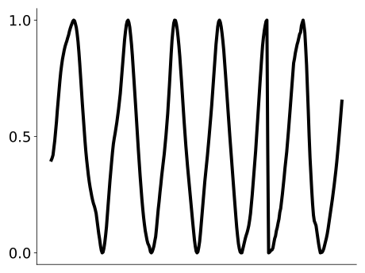 | ||||
| Melda Phaser Quasiperiodic LFO |
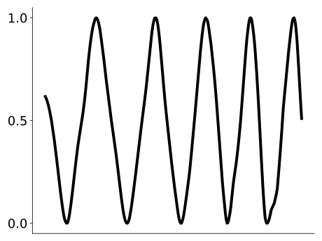 | ||||
| Melda Phaser Quasiperiodic LFO |
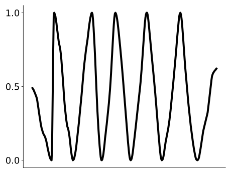 | ||||
| Melda Phaser Quasiperiodic LFO |
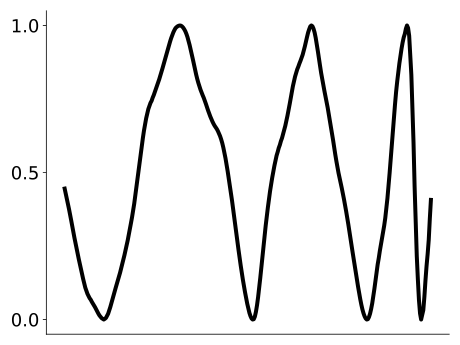 | ||||
| Melda Phaser Quasiperiodic LFO |
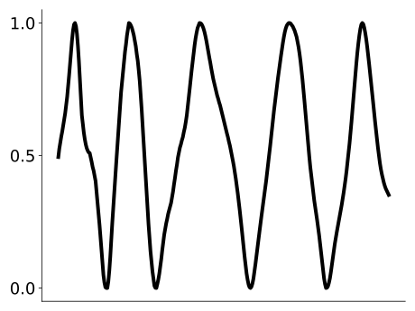 | ||||
| Melda Flanger Quasiperiodic LFO |
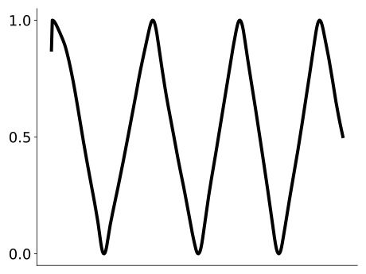 | ||||
| Melda Flanger Quasiperiodic LFO |
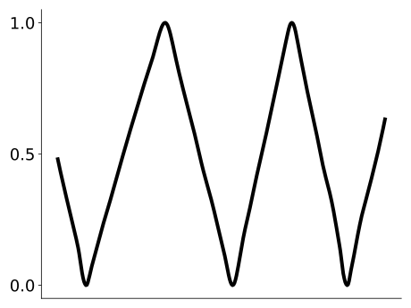 | ||||
| Melda Flanger Quasiperiodic LFO |
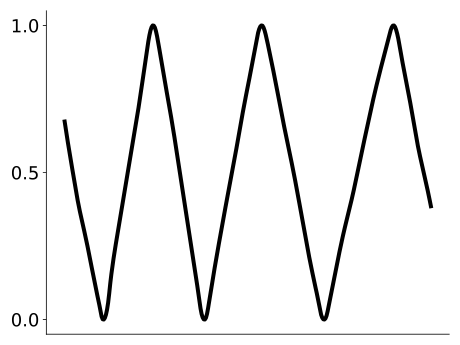 | ||||
| Melda Flanger Quasiperiodic LFO |
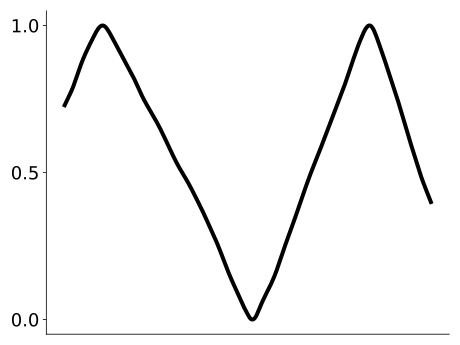 | ||||
| Melda Flanger Quasiperiodic LFO |
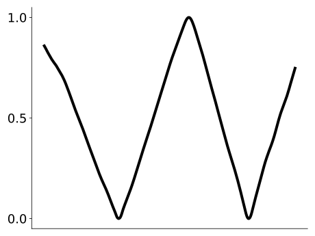 | ||||
| Melda Phaser Irregular LFO |
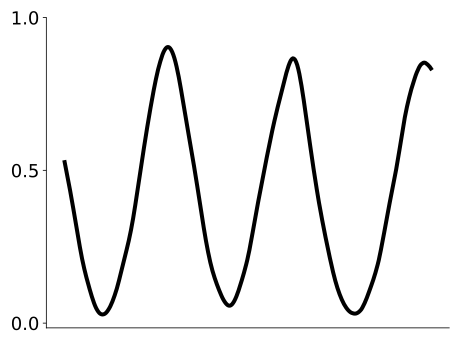 | ||||
| Melda Phaser Irregular LFO |
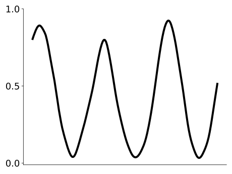 | ||||
| Melda Phaser Irregular LFO |
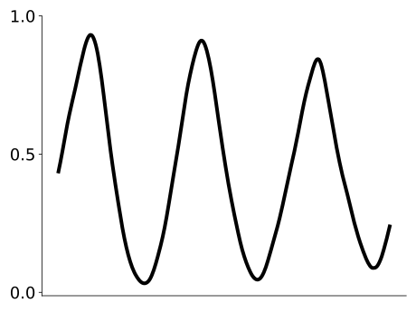 | ||||
| Melda Phaser Irregular LFO |
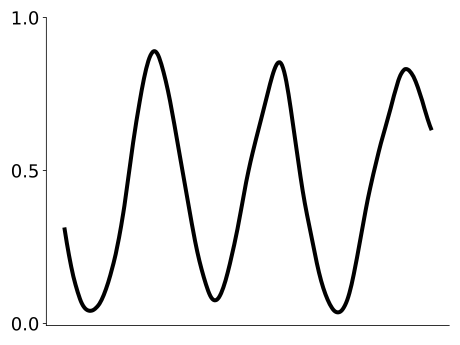 | ||||
| Melda Phaser Irregular LFO |

|
||||
| Melda Flanger Irregular LFO |
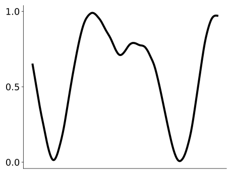 | ||||
| Melda Flanger Irregular LFO |
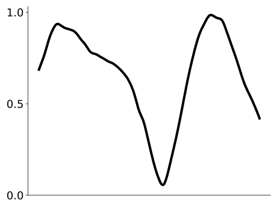 | ||||
| Melda Flanger Irregular LFO |
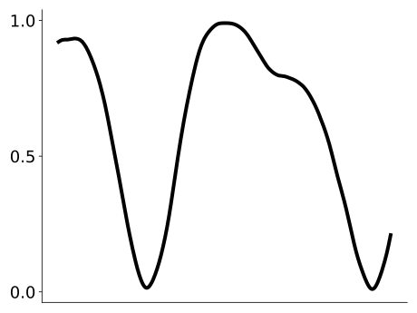 | ||||
| Melda Flanger Irregular LFO |
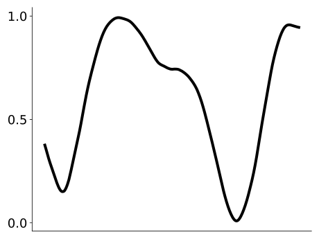 | ||||
| Melda Flanger Irregular LFO |

|
Samples were generated randomly from the test dataset and then selected for variety based
on the dry sample. No normalization has been applied.
EGFx Analog Effects
| Effect | Dry | Wet | Extracted LFO | LSTM-64 | Baseline |
|---|---|---|---|---|---|
| EGFx Phaser Example 1 |
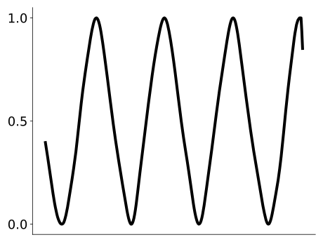 | ||||
| EGFx Phaser Example 2 |
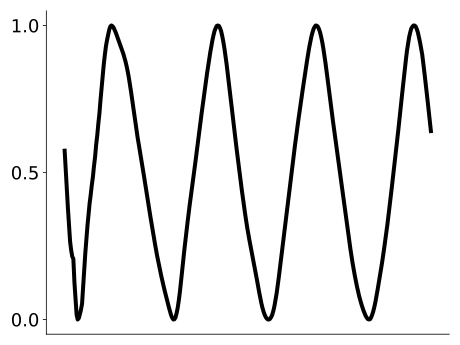 | ||||
| EGFx Phaser Example 3 |
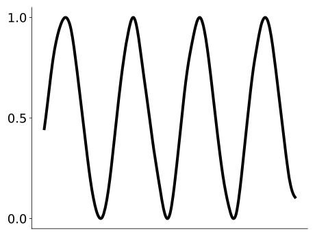 | ||||
| EGFx Phaser Example 4 |
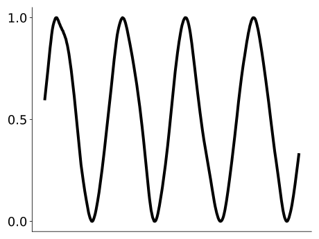 | ||||
| EGFx Phaser Example 5 |
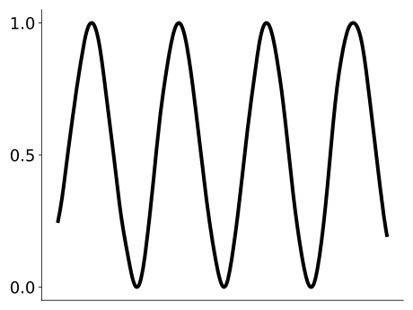 | ||||
| EGFx Flanger Example 1 |
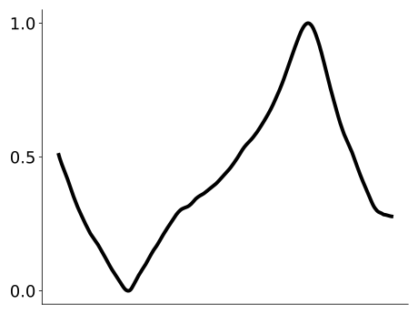 | ||||
| EGFx Flanger Example 2 |
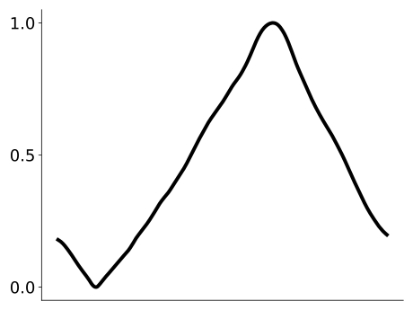 | ||||
| EGFx Flanger Example 3 |
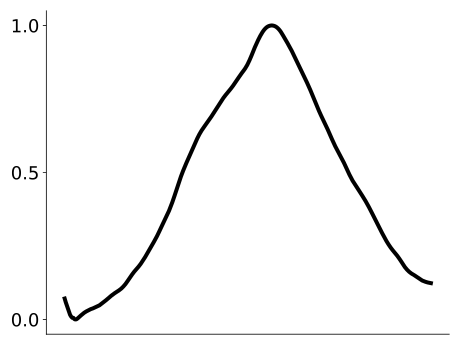 | ||||
| EGFx Flanger Example 4 |
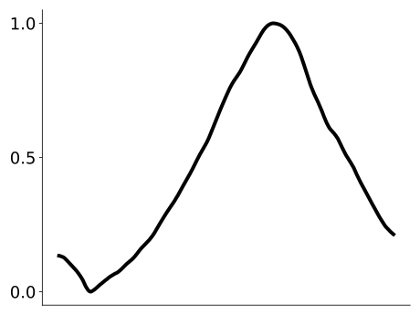 | ||||
| EGFx Flanger Example 5 |
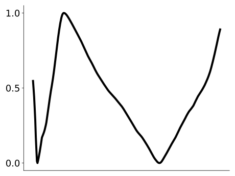 | ||||
| EGFx Chorus Example 1 |
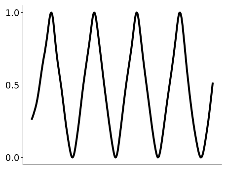 | ||||
| EGFx Chorus Example 2 |
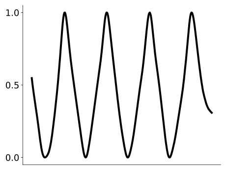 | ||||
| EGFx Chorus Example 3 |
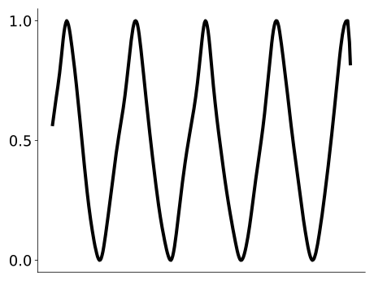 | ||||
| EGFx Chorus Example 4 |
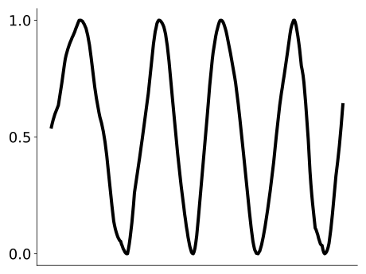 | ||||
| EGFx Chorus Example 5 |
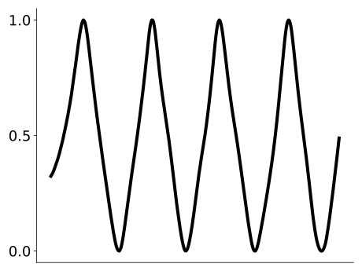 |
Samples were generated randomly from the test dataset and then selected for variety based
on the dry sample. Peak normalization has been applied.
Plugins
We make the trained effect models accessible using the Neutone plugin and SDK. This enables most users to experiment with the models via a real-time VST plugin in their preferred digital audio workstation (DAW) on arbitrary input audio. Older and / or slower CPUs may struggle to run the models in real time.
Instructions:
- Download and install the Neutone plugin.
- Download a model file from the links below.
- Open the plugin in your preferred digital audio workstation.
- Click on "load your own" at the top of the Neutone plugin interface and select one of the models you just downloaded.
-
Use the four custom knobs to control the model:
- Knob A: LFO rate (0.1 to 5 Hz)
- Knob B: LFO depth (0.0 to 1.5)
- Knob C: LFO stereo phase offset (0 to 360 degrees)
- Knob D: Unused
For best results we recommend setting the input gain knob to -6 dB to avoid clipping, setting your DAW's sample rate to the native sample rate of the models (44.1 kHz), and using a buffer size of 128 samples or more.
Model Files:
- Melda Phaser LSTM-64 (trained on quasiperiodic LFO)
- Melda Flanger LSTM-64 (trained on quasiperiodic LFO)
- Melda Phaser LSTM-64 (trained on irregular LFO)
- Melda Flanger LSTM-64 (trained on irregular LFO)
- EGFx Phaser LSTM-64
- EGFx Flanger LSTM-64 (was not modeled successfully)
- EGFx Chorus LSTM-64 (was not modeled successfully)
Citation
Accepted to the 26th International Conference on Digital Audio Effects (DAFx23), Copenhagen, Denmark, 4 - 7 September 2023.
@inproceedings{mitcheltree2023modulation,
title={Modulation Extraction for LFO-driven Audio Effects},
author={Christopher Mitcheltree and Christian J. Steinmetz and Marco Comunità and Joshua D. Reiss},
booktitle={International Conference on Digital Audio Effects (DAFx)},
year={2023}
}